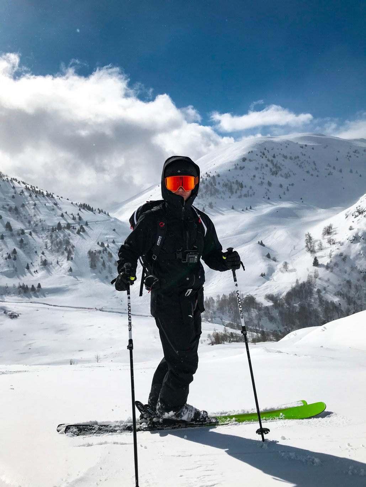

about us
Founded in 2002 by nature loving friends. We specialize inn making outerwear with waterproof technology so you can enjoy your adventures. The material used in our products are 90% recycled and 10% natural. Using nature means also giving to nature and this is something we always will have in our philosophy.
discover
Discover our guide to your perfect outerwear. No matter the season, terrain or sport we have what you need. And remember to share your experiences. Inspire others.